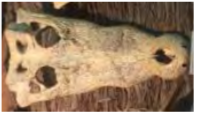

- Venomous snakes possess venom glands in their mouth, coupled with fangs to inflict bites,
- e.e. cobras, taipans.
- 0.11g of the Inland Taipan’s venom (the world’s most venomous snake, found in Australia) is enough to kill 100 people
- Constrictors have teeth but lack venomous fangs
- Kill prey by coiling around the prey, preventing it from breathing
- Teeth capable of inflicting painful bites too
- Most constrictors are ambush hunters
Nearly 3500 species of snakes, only 10% are venomous. Snakes can be found almost everywhere except Antarctica, New Zealand and Ireland. There are more than 245 species found in Asia. They can be characterized by their long, slim and flexible body. Snakes are lack of limbs, eyelids and external ear, but they do have backbones albeit their flexibility, most have more than 200 vertebrae in their body openings.
- Lower jaw of snake formed in such a way that it can move forward or backward ("Jaw walk". Lower jaw is made up of 2 separate pieces held together with a strong but stretchy ligament)
- Together with flexible skin, allow snake to ‘drop’ its jaw and widen the mouth cavity to swallow prey larger than its head
- Prey is always swallowed headfirst so that their limbs fall back nicely
- Huge amount of saliva is produced to lubricate the prey as it moves down the gullet and elastic skin stretched to accommodate extra volume. The trachea of most snakes can extend outward to the edge of the mouth, beneath the food, which enables the snake to breathe even with its mouth full
- Vipers are able to open their mouths the widest to swallow a prey
- Snakes are carnivorous – most feed on mammals and birds, others include eggs
- King cobra eats other snakes only. King Snake also eat other snakes
- Anacondas are powerful stranglers, massive body can grow to girth of over 1metre
- Record weight of anaconda is 227kg
- Reticulated python of southeast Asia can grow to a record length of 10m.
- Reticulated pythons can be found in Singapore
- Pythons are the only snakes known to incubate their eggs (some species guard their eggs, only python incubate their eggs)
- It is not easy for pythons to keep eggs warm at certain temperature all the time, due to fact that they are cold-blooded and body temperature is dependant on surroundings.
- To produce required heat for incubation, female pythons contract their body muscles, or move the eggs in and out of the sun gently.
- Some snakes lay eggs (oviparous, e.g. Pythons) while others give birth to live young (viviparous, e.g. Boas)
- Snake eaters: Predators of snakes include Birds of prey (eg, Secretary Bird, sea eagles), man, mongoose, other snakes (eg, Kingsnake and King Cobra) as well as some spiders.
- Snakes moult because old skin gets worn out or damaged, heal wounds and remove parasites
- Before moult, bottom layer of skin liquidizes and separates from the new skin forming below, making old skin appear dull and eye scales ‘cloudy’
- Normally hide in a safe place and will stop eating, vision is reduced. Snakes in this state are very irritable as they are in a defensive mood.
- Molt achieved by rubbing against hard objects, until able to crawl out, effectively turning the molted skin inside-out
- Young snakes moult more often as their skin gets tight as they grow
- Snake skin after moulting is called ‘slough’ and usually in 1 piece
- Snakes that are sick, suffering from malnutrition, injured or found in environment with less than optimal conditions (low moisture and humidity) may shed their skin in pieces
- Very large snakes also tend to moult in pieces as the skin usually tears because of the long length being sloughed off
- Scale shape, size and placement as well as patterning is visible on the shed slough
- Sense of smell used to detect food, predators, stimulate courtship and find mate
- Uses its forked tongue to pick up chemical traces, both from the air and from ground
- Tongue transfers the odour particles to the Jacobson’s organ via a pad of tissue on the roof of the mouth
- As the tongue is forked, it can pick up senses from different direction
- No taste buds on tongue, as it’s modified to transport odour particles. Taste buds located in the roof of mouth and inside tooth rows on upper and lower jaws.
- Camouflage
- Geometric patterns break up the snake’s outline (known as disruptive coloration)
- Stripes that run through the snake’s eye add to predator’s confusion
- divert attention from critical head area by hiding their head beneath body coils (eg, Ball Python), or have blunt heads and tails, making it difficult to tell the difference between them. (appearance of 2 heads)
- As the tongue is forked, it can pick up senses from different direction
- No taste buds on tongue, as it’s modified to transport odour particles. Taste buds located in the roof of mouth and inside tooth rows on upper and lower jaws.
- Advertise presence with bright colors and patterns e.g. venomous coral snakes
- Most predators associate bold colors with danger and will leave the snakes alone
- ‘False’ coral snakes are harmless species that are brightly colored with similar patterns to mimic the venomous species
- The banded coral and blue coral snakes are 2 of the most colorful snakes found in Singapore, living in forested areas. The blue coral snake is believed to have killed a few people in Singapore with its venom.
- Dry bites
- when a venomous snake bites but no venom is delivered.
- Play dead
- Play dead by flipping over and lying motionless on the ground
- Mouth open and tongue lolle
- Rattle a warning
- Rattlesnakes retain a portion of dry skin on the end of the tail each time they shed their skin
- When they shake their tail, the rings of dry, loose skin produce a loud rattling sound to scare off intruders
- Most snakes hiss as a warning to intruders
What to do when coming face to face with a snake?
First, stand still and then back away slowly. An unprovoked snake is likely to move away eventually. If it does not, call the pest control experts to remove it from your premises. Do note that snakes may ‘play dead’, so do not attempt to handle them.
Poison
- Term used broadly to refer to any substance that irritates or kills
- It is also used to refer to any harmful substance that enters the body through absorption via the skin or through eating it or by breathing it in.
Venom
- Is a poison that an animal like a snake or a spider injects into another animal
- Such an animal that inject a poison by biting or stinging is known as a venomous animal
- There are 3 main functions of snake's venom:
- Immobilize prey
- Aid digestion by breaking down muscle tissue
- Deterrent to possible predators (Eg. spitting cobra)
- There are 3 types of venom venom:
- Neurotoxic: attacks the central nervous system, especially heart and lungs, causing heart failure, paralysis of diaphragm muscles and suffocation. E.g.: Cobras, Coralsnakes
- Haemotoxic: attacks the circulatory system, are either anticoagulants or coagulants, destroys red blood cells. E.g.: Vipers like the rattlesnake
- Myotoxic: attacks the muscle fibre and damage muscles. E.g.: Seasnakes
Synthetic cobra venom is used in pain relievers and arthritis medication.
These are the four types of teeth that developed in different snake groups. Snakes can have some combination of four tooth conditions. All four teeth types are pictorially represented in the figures below, shown with their groove or channel of venom delivery, indicating that third type (proteroglyphous) and the fourth type (solenoglyphous) are the more efficient venom delivery systems.
Exceptions: A few snakes do not conform to these categories. A group of African venomous snakes which includes burrowing vipers, asps and mole vipers are solenoglyphous but the fangs swing out sideways, allowing it to strike without opening its mouth, perhaps allowing it to hunt in small tunnels.
1. Basic backward pointing teeth
All snakes have them. All boas andpythons have these teeth.
2. Fixed, front fangs
Elapides like the cobras and mambas have these teeth. Typically bite, hold and chew to inject venom.
3. Fixed rear fangs
Elapides like the cobras and mambas have these teeth. Typically bite, hold and chew to inject venom.
4. Long, hinged foldable fangs
Vipers, rattlesnakes and adders belong to this group. Folded down against roof of mouth when not in used. Snakes with these fangs typically strike, envenomate and release the prey but those which prey on small animals will bite and hold onto prey.
Python skull and lower jaws
- Teeth points backwards to bring prey into the mouth and prevent prey from slipping out
- Teeth are replaced regularly, with new tooth pushing the old tooth out from below
- Since hearing is poor due to lack of external ears, pick up vibrations from the ground through their jawbones
Snake Anti-venom / antivenin
- Anti-venom is a serum that is commercially produced to neutralize the effects of a snake venom
- There are 2 types of anti-venom:
- Mono-valent: serum that is produced from the venom of one species of snake. This is effective only against the venom of that particular species of snake
- Polyvalent: serum produced from a cocktail of venom, it is effective against a range of venoms
- Healthy horses are injected with venom collected from snakes, in non-lethal doses at regular intervals. The horses will build up immunity against the venom by producing antibodies. Antibodies separated from the horses’ blood is collected and freeze-dried into anti-venom

Puff-faced Water snake
- Commonly found in Singapore, and most of Southeast Asia
- Inhabits freshwater habitats, swamps, ponds and forest streams
- Nocturnal and feeds on small fish and frogs

Snake eggshell
- parchment-shelled eggs
- very little calcium in the shell, which has a paper-like texture
- very little albumin and are dependent on water uptake from suitable microhabitats for nests that have adequate soil moisture
King Cobra

King cobra is the world’s longest venomous snake. Although its venom not as potent as other cobras, injects in large quantities of 6-7ml per bite; enough to kill an elephant or 20 people! Only snakes known to build nests, females guard eggs until just before they hatch. Young king cobras are black with striking yellow lateral stripes.
- Size: 3m – 5.5m
- A 5.54m specimen, captured in Malaysia in 1937 and sent to London Zoo, grew to 5.71m
Habitat and range:
- Eastern India, Indochina and Southeast Asia (including Peninsular Malaysia and Singapore)
- Found in forested areas, rainforests, savannas, bamboo thickets, and mangrove swamps
- Can slide up trees and bushes and spend a good amount of time above the ground, looking for prey
- Habitat destruction brings them into canals and golf courses (Elvis was found in S’pore Island Country Club)
Diet:
- Other snakes, sometimes lizards
Defense:
- Despite size and reputation, it is not aggressive
- Attacks only when startled, provoked or to protect eggs
- When threatened, rises up to one-third its body length (almost the height of a man) and displays its hood to fill size by spreading the ribs in its neck
- Hiss (low like a growl)
Conservation:
- IUCN status – Vulnerable
- Threats include lost of habitat due to clearing of forests for agriculture, and skin trade
- Meat eaten, gall bladder used in traditional medicine
Token feeding:
- Once a week
- 2.15pm only on Sunday
Reticulated Python
Reticulated phython is the most common snake found in Singaproe. It is the longest snake in the world, record length of 10m. Female pythons incubate their eggs by rapidly contracting body muscles to increase their body temperature to keep eggs warm. Also, they gently shuffle eggs in and out of sun.
- Size: 4.5m – 10m
Habitat and range:
- Occur in Southeast Asia and Philippines
- In forested areas, usually near water bodies
- Highly adaptable, invading agricultural areas, suburbs and cities
- Attracted by presence of rodents
- In Singapore, reports of reticulated pythons finding their ways to flats, probably through sewage pipes
Diet:
- Comprises mainly warm-blooded mammals
- Sensory pits are found above its upper lip to detect infra-red heat rays of potential prey
- Heat receptors are among the most sensitive found in the animal world and they enable the snake to locate prey accurately, even in darkness
- Prey are constricted, killed by suffocation and swallowed whole
- Known to swallow very large prey – record of one python devouring a 25kg pig and another 5.2m python swallowing a 14 year-old boy
Royal Python
Royal python is also known as ball python. Its small, shiny scales and beautiful colors and markings make it especially popular with the fashion and pet industry
- Size: 91cm to 1.5m
- Lifespan: 20 to 30 years
Habitat and range:
- Found in Central and West Africa
- Lowland and coastal forests and adjoining grasslands
Diet:
- Small mammals, birds
Reproduction:
- In captivity sexual maturity is reached in 3-4 years
- 4-10 eggs laid, with incubation about 3 months
- In ideal conditions hatchlings will grow to 90cm in length in three years
‘Balling’ for protection
In face of danger, coils into a tightly twined ball, with head and neck tucked safely in thecentre of the ball. This makes it too large for predators to swallow. In this position, they literally can be rolled about. Other snakes use this defensive posture too, but few have refined it to this degree
Conservation:
- Considered a local delicacy, hunted extensively for their skins and for pet trade (as its small size and gentle nature make it desirable as a pet)
- Although docile, royal pythons are difficult to breed and maintain in captivity
- With slow reproduction rate even in the wild, its survival is threatened with human persecution